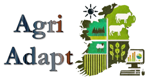

Modelling the impact of rising temperature and seasonal drought on the productivity of key forest species
People:
PhD (Walsh Fellowship),
Niall Farrelly (Teagasc),
Jon Yearsley (UCD)
The primary goal of this project is to inform the adaptation of Irish forestry to future climate change.
Show more details ...
Modelling major vectors of barley yellow dwarf virus in current and future climate scenarios
People:
Blake Corrigan,
Stephen Byrne (Teagasc),
Louise McNamara (Teagasc),
Jon Yearsley (UCD)

The primary goal of this project is to improve models for major vectors of barley yellow dwarf virus in current and future climate scenarios
Show more details ...
Online Pest-risk Analysis Modelling
People:
Paul Brett,
Barry Coonan (Met Éireann),
Klara Finkele (Met Éireann),
Padraig Flattery (Met Éireann),
Deborah Hemming (UK Met Office),
Neil Kaye (UK Met Office),
Tamara Hochstrasser (UCD),
Conor McGee (DAFM),
Jon Yearsley (UCD)

The primary goal of this project is to provide a practical visual tool that communicates scientific evidence to stakeholders involved in Ireland's plant biosecurity policy and pest/pathogen-risk management.
Show more details ...
Adaptation, mitigation and protection strategies to increase resilience of Irish forests to address the impacts of climate change
People:
Wilson Acosta,
Ultan O'Donnell,
Hadj Ahmed Belaouni (AFBI),
Marialaura Destefanis (DAFM),
Amanda Brechon (DAFM),
Annmarie Hamilton (Coillte),
Archie Murchie (AFBI),
Niall Farrelly (Teagasc)
Conor McGee (DAFM),
Richard O'Hanlon (DAFM),
Jon Yearsley (UCD)
This research is pillar 3 of the project entitled "Adaptation, mitigation and protection strategies to increase resilience of Irish forests to address the impacts of climate change (ADAPTForRes)". This project will develop optimised surveillance tools for the early detection of fungal forest pests in Ireland.
Show more details ...
Past Research Projects
SUSPOLL: Sustainable pollination services in a changing world
People:
Sarah MacQueen,
Arrian Karbassioon,
Alison O'Reilly ,
Jon Yearsley
Dara Stanley (lead PI),
This project the response of pollination services to pesticides and climate change. The modelling component of the project looks at the thermodynamics of pollinators as a mechanistic model of pollinator activity.
Show more details ...
Modelling the impact and management of marine invasive species (MIMMIS)
People:
Morane Clavel-Henry,
Rebecca Giesler,
Tasman Crowe,
Jon Yearsley
 This project studies the spread of two target marine invasive species along Ireland's coastline. The project is a combination of larval biophysical modelling and the marine ecology of invasive species.
This project studies the spread of two target marine invasive species along Ireland's coastline. The project is a combination of larval biophysical modelling and the marine ecology of invasive species.
Show more details ...
The phenology of perennial ryegrass and its potential contribution to grassland carbon
sequestration
People:
Carl Fisk,
Rainer Melzer,
Hannah White,
Charilaos Yiotis,
Jon Yearsley
This project studies the phenology of perenial rye grass pastures in Ireland (primarily the length of the growing season) and the variation in phenology between different varieties of rye grass. Increasing the growing season of perennial rye grass pasture has the potential to increase the ability of Irish grasslands to sequester carbon.
Show more details ...
Biodiversity, resilience and food security: understanding the role of biodiversity in maintaining food production
People:
Maja Ilić,
Amy Arnott,
Willson Gaul,
Mark Emmerson,
Paul Caplat,
Tim Benton,
Jon Yearsley
 This project studies the resilience of grassland production systems and their capacity to resist, recover and adapt to future environmental change, whilst sustainably producing food for a growing global population.
This project studies the resilience of grassland production systems and their capacity to resist, recover and adapt to future environmental change, whilst sustainably producing food for a growing global population.
Show more details ...
Deep-sea larval dispersal and ecosystem connectivity
People:
Julia Sigwart,
Cindy van Dover,
Jens Carlsson,
Jon Yearsley
 What is the dispersal capacity of marine larvae in the deep-sea? How are deep-sea ecosystems colonised and from where? We are using oceanographic and genetic data to address such questions.
What is the dispersal capacity of marine larvae in the deep-sea? How are deep-sea ecosystems colonised and from where? We are using oceanographic and genetic data to address such questions.
Show more details ...
Population Genetics of Collective Dispersal
People:
Thomas Broquet,
Frederique Viard,
Glenn Yannic,
Jon Yearsley
 We are developing population genetic theory that describes collective dispersal, where multiple individuals show similar dispersal pathways. This type of dispersal is seen for marine invertebrate larvae, wind dispersed organisms, and is also applicable to dispersal at a species' range margin.
We are developing population genetic theory that describes collective dispersal, where multiple individuals show similar dispersal pathways. This type of dispersal is seen for marine invertebrate larvae, wind dispersed organisms, and is also applicable to dispersal at a species' range margin.
Show more details ...
Modelling Airborne Spread of Ash Dieback Disease
People:
Paul Burns,
Forest Service,
Chris Gilligan,
Matt Castle,
Maarten Nieuwenhuis,
Jon Yearsley
This project used a Lagrangian particle tracking model to assess the dispersal potential of ash dieback disease across Ireland.
Show more details ...
Smouldering Fire in Peatlands
People:
Nuria Prat,
Claire Belcher,
Rory Hadden,
Guillermo Rein,
Jon Yearsley
We study the propagation of smouldering fire through organic soils (principally peat) using a combination of controlled laboratory experiments and models of smouldering fire.
Show more details ...
Range Expansion of the Greater White-Toothed Shrew in Ireland
People:
Allan McDevitt,
Jon Yearsley
The greater white-toothed shrew (Crocidura russula) was first discovered in Ireland in 2007. Ever since it has been gradually expanding its distribution. The study uses the greater white-toothed shrew as a model species to study evolutionary processes at an expaning range margin. We are also collaborating with colleagues in Queen's University Belfast (Ian Montgomery, Neil Reid, David Tosh) to quantify the rate at which this shrew is spreading across Ireland and its ecological impact.
Show more details ...